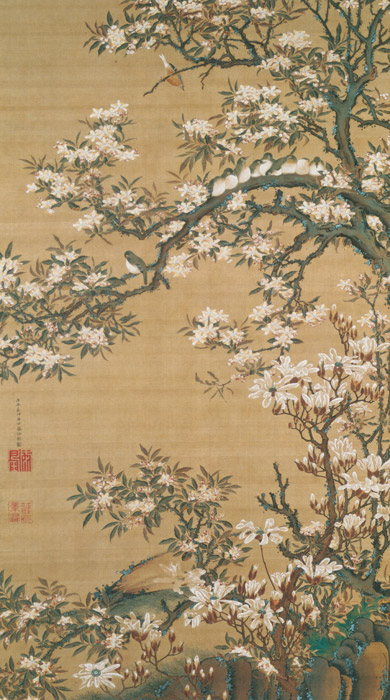

作品名 「海棠目白図」
花言葉 「美人の眠り」「温和」「艶麗（えんれい）」
ハナカイドウ
「美人の眠り」
中国原産の落葉小高木で江戸時代初期のころ日本に渡来したと言われています。花期は4-5月頃で淡紅色の花を咲かせる。唐の玄宗皇帝が楊貴妃が眠る姿をハナカイドウに例えたという故事があり、中国では古くから愛され、美人の代名詞にも使われている。
海棠目白図
伊藤若冲
《動植綵絵》と画絹の寸法がほぼ同じで、同じく最上質の絵具を用いて描かれています。
| 作品名 | 海棠目白図 |
| 作者 | 伊藤若冲 |
| 制作年 | 1761年〜1765年 |
| 種類 | 絹本着色 一幅 |
| 寸法 | 139.0×78.9cm |
| 所蔵 | 泉屋博古館 |